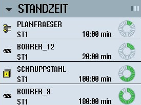

Das Widget zeigt die Werkzeugüberwachung bezogen auf folgende Werte:
Einsatzzeit des Werkzeugs (Standzeitüberwachung)
Gefertigte Werkstücke (Stückzahlüberwachung)
Werkzeugverschleiß (Verschleißüberwachung)
| Hinweis |
Mehrere SchneidenWenn ein Werkzeug mehrere Schneiden besitzt, dann werden die Werte von der Schneide mit der geringsten Reststandzeit, - stückzahl, -verschleiß angezeigt. |
Sie wechseln zwischen den Ansichten, indem Sie horizontal scrollen.
